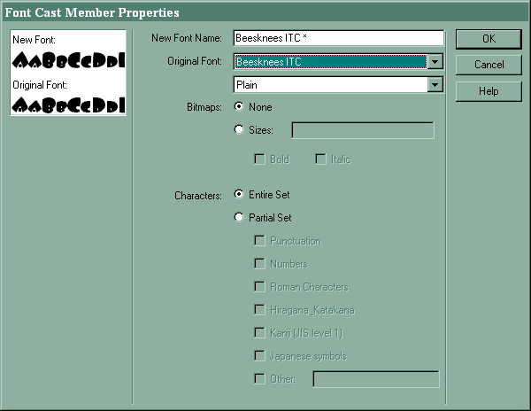
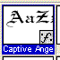

In order for a font to display correctly in your movie, the user's computer — whether Mac or PC — must have that font installed (same rules as a web page). Problem is, the only fonts you can be sure are available on your end-user's computer are your basic web fonts: Times, Helvetica/Arial, Courier ... If you want to use any other font in your Director work, you must embed that font in your movie. Embedding a font temporarily installs it, making it available for you to use in your text!
Tip: For best results, embed the font into your movie first thing, then use this new embedded font in your Text & Field members. If you embed a font after you've already used it, it's a good idea to go back into all text members that use it & reapply the new font.
To embed a font:
 |
| That's it! The font is embedded in your movie (see it in your cast?) Use it in your text castmembers as you would any font — just remember to use the one with the "*". |  |